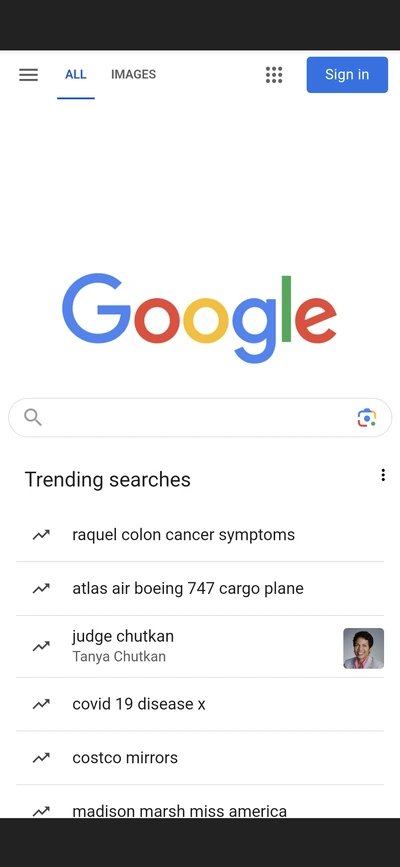

Visual Hierarchy
The New York Times
nytimes.com
The New York Times makes use of visual hierarchy most clearly through font size. Th headlines are always first, and always in the largest font, the easiest to see on the page. The subheaders, links, and summaries are not meant to be seen first. They explain, but are not the most interesting part of the page.
White Space
google.com

Using Google as an example for how a website uses whitespace was pretty easy actually. Google focuses on minimalism and simplicity for nearly all of their designs. This makes it very easy to focus your attention, there's nothing else to distract you from using the web page as intended.
PARC: Repetition
Apple
apple.com
Apple uses a lot of repetition on their ad cards on their page. They picked a layout for showcasing products and each card on the home page follows this very closely. This makes it easy to process and see which products might be of interest. If each card had a different layout, it would be confusing and take too much mental energy to view the page.